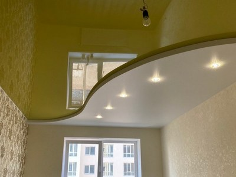
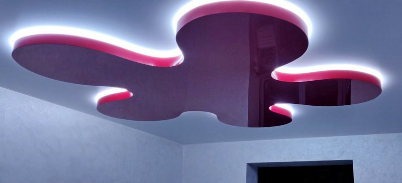
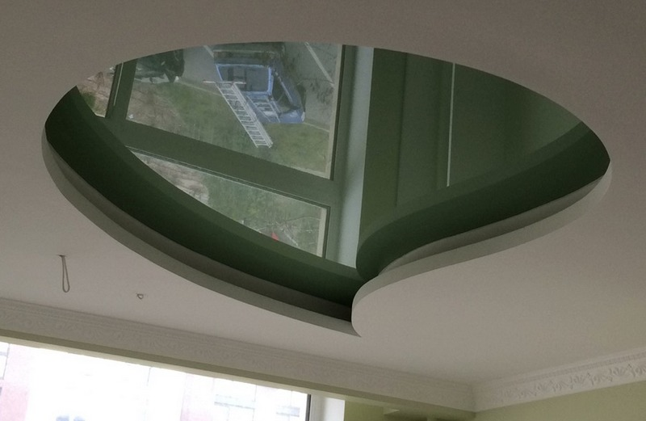

Многоуровневые натяжные потолки

Натяжные потолки уже довольно прочно закрепили свои позиции в мире способов современной отделки верха помещений. Их применяют в жилых квартирах, в административных зданиях и в развлекательных заведениях.
Но, согласитесь, чем больше пространства для воплощения всех идей у заказчика, тем больше шансов в итоге получить действительно потрясающий результат при отделке потолков. Если и возможно описать весь потенциал многоуровневых потолков, то только авиационными терминами. Это действительно высший пилотаж в потолочных конструкциях. Только представьте свои возможности, когда у вас есть способ, как играть с фактурами, цветами и при этом еще варьировать высотой.
Хотя название и говорит само за себя, со всеми особенностями данной отделки нужно ознакомиться подробнее.
Детальнее о многоуровневых потолках
Если вы совсем не сталкивались с данным видом конструкций, то для начала желательно знать, что из себя она представляет. Многоуровневый потолок – это конструкция, которая сочетает в себе несколько уровней полотен, которые дополняются листами или вставками из гипсокартона. Чаще всего гипсом закрываются вертикальные переходы между ярусами, но есть и прекрасные решения, когда картон используется для обшивки горизонтальной площади. Это могут быть концентрические круги или волны. Все зависит от предпочтений.
Как правило, уровней монтируется два-три. Но если высота потолков позволяет – можно и больше. Каждый слой отличается от предыдущего материалом полотна (ПВХ-пленка, ткань), а также цветовым решением. Например, красиво выглядит глянец вокруг люстры с контрастным матовым покрытием по периметру.

Дизайнерские решения при помощи потолков со многими уровнями
При грамотном сочетании разных полотен, гипсокартона и осветительных приборов, можно получить невероятной красоты зрелище. Эффектно в таком случае будет поместить матовую репродукцию известной картины по центру, а по периметру пустить блестящий глянец. Разделить их полоской гипса с точечным освещением.
Если уж речь зашла о фотопечати, то именно многоуровневые потолки станут прекрасным решением для 3Д рисунков. Только здесь уровни должны быть друг над другом. Обычно наружный слой выполняется из полупрозрачной пленки с небольшим лоском, а внутренний – из матовой ткани. На первый наносятся некрупные детали переднего плана, например птицы, а на втором изображают основной фон, в данном случае подойдет небесная гладь. Поместив между слоями подсветку, можно добиться очень реалистичной картины неба, моря с обитателями и т.п. Оригинально и стильно выглядят рисунки, имитирующие туннели, сферы или космическое пространство.
Так что, эстетический эффект многоуровневых конструкций натяжных потолков, однозначно, вне конкуренции.
Какими достоинствами обладают многоуровневые потолки
Как вы уже поняли, главным плюсом конструкций является широчайшее поле для воплощения дизайнерских задумок. Они способны кардинально изменить помещение в лучшую сторону, сделает его торжественным и нарядным. Кроме того, появится возможность разделить комнату на отдельные зоны: рабочую, для отдыха и т.д. Но это далеко не все, чем могут похвастать многоуровневые натяжные потолки. Не менее важными преимуществами являются и те, которые присуще и одноуровневым конструкциям:
- Отменные звуко- и шумоизолирующие свойства. Такой потолок удержит в вашей квартире до 60 % тепла и не даст проникнуть до 90 % посторонних звуков.
- Долгий срок службы. Каждый производитель дает разную гарантию на свою продукцию, но не менее 10 лет. Но на практике этот показатель выше в разы. Материалы не боятся ни влаги, ни солнечного света и остаются привлекательными весь срок службы, то есть не выгорают и не тускнеют. Только представьте, что за это время переклеить обои или перекрасить потолок нужно будет не один раз.
- Устойчивость к влаге станет залогом того, что вам не страшны затопления сверху и конденсат снизу. Правда, потоп перенесет идеально только та конструкция, внутренний слой которой является цельным полотном без гипсокартоновых вставок. Например, как при 3Д декоре.
- Если у вас неровные потолки, то лучшего решения, чем натяжные полотна не найти. Во-первых, полностью отпадает потребность в выравнивании поверхности, а, следовательно, и в оплате таких услуг. Так, при оклейке обоями или нанесении декоративной краски, потолок должен быть идеальным. Во-вторых, если учесть срок службы натяжных потолков, то вы еще и сэкономите на их установке.
- И вся это красота монтируется и устанавливается за считанные часы. После работ не остается никакого мусора, строительной пыли и мокрых пятен.
- Простота в уходе. Зачастую, даже за конструкциями с гипсокартонном ухаживать довольно просто. Достаточно лишь вовремя пылесосить участки с гипсом и протирать влажной тряпкой элементы из полотна. Также вы можете не волноваться за появление плесени и грибка.

Кром того многоуровневый потолок радует еще и качествами, присущими исключительно ему:
- Облегчение зонирования пространства в помещении;
- Огромные возможности поиграть с освещением комнаты.
Нюансы установки многоуровневой конструкции
В целом, все недостатки конструкций с несколькими ярусами, упираются в сложность их установки. Желательно заранее проработать дизайн в трехмерном изображении при помощи опытного дизайнера и специальной программы. Пересмотрите несколько вариантов, причем кардинально отличающихся друг от друга цветом и световыми эффектами, и выберите самый удачный.
Еще одним минусом условно можно назвать ту особенность многоуровневого потолка, что он «крадет» много высоты. Хотя и этот нюанс решается ответственным подходом к подбору модели. Есть работы, которые выглядят потрясающе, и при этом выполнены в квартирах со стандартной высотой 2,6-2,7 метра. Не останавливайтесь на единственном фото, так вы не оцените все возможности такой потолочной отделки.
Таким образом, ключевым моментом в выборе конструкции должен стать поиск умелого дизайнера. Не забывайте, что грамотное сочетание полотен и их оттенков способно кардинально изменить дизайн помещения. Но так же можно и сильно навредить ему. Стремитесь не просто добиться выразительности, но и найти способ передать эту выразительность в реальности.
Конечно, такая отделка обойдется на порядок дороже, чем одноуровневая или подвесная конструкция, но вы получите взамен предмет гордости и радость на долгие годы.
Где лучше все установить многоуровневый потолок
Как уже ясно из текста выше, такая конструкция способна на многое, поэтому и пригодна для самых разных помещений. Однако и тут не все так просто. Поскольку весь потенциал нескольких уровней можно раскрыть только на большой площади, то уместнее всего для нее будут залы, спальни и гостиные. Очень удачными считаются многоуровневые отделки рабочих кабинетов. Если объем кухни позволяет – можно и в ней. Но главное помнить – многоуровневая конструкция любит простор.
Как видно, все сложности при выборе и установке такого потолка компенсируются в итоге шикарным внешним видом помещений и прекрасным настроением их хозяев.
Использование многоуровневых потолков в жилых помещениях
Выше мы уже упоминали, что потолки в несколько уровней больше подходят для больших помещений. Но дизайнеры считают, что некоторые правила можно и нужно нарушать, поэтому мы предлагаем вам ознакомиться с интересными решениями в квартире:
- В детской. Детские комнаты обычно небольшие, но остро нуждаются в зонировании. Если перегородки и лишняя мебель загромождают пространство, то двухуровневый потолок позволяет сделать помещение с четко ограниченными зонами без визуальных ограничений.
- В спальне. Нужно разделить зону сна и будуар, натяжной потолок с разными уровнями легко справится с этой задачей. А если правильно проработать освещение, то одна комната превратиться в два отдельных помещения без стен и перегородок.
- Кухня-студия. Обычно такие варианты используют в маленьких квартирах, где каждый метр на вес золота. Поэтому многоуровневый потолок – идеальное решение для небольшой гостиной с зоной кухни.
По большому счету, многоуровневый потолок можно сделать в любой комнате. Если вы обратитесь к дизайнерам компании Nova Stelya, они разработают грамотный проект для вашей квартиры.
Использование многоуровневых потолков в нежилых помещениях
Тут ограничений по использованию крайне мало. В офисах, фойе гостиниц, конференц-залах, ресторанах, кафе, клубах – сложные потолки украсят любое помещение. Они сделают его вид богатым, интересным, уникальным. При этом совсем не обязательно покупать очень дорогую мебель или отделку. Акцент на потолке позволяет сэкономить, но при этом не удешевить внешний вид помещения.
Наша компания устанавливала в нежилых помещениях такие виды многоуровневых потолков:
- Многоуровневые натяжные потолки с эффектами – когда использовать дорогой эффект, например, «звездное небо» во всем помещении нецелесообразно, можно его вмонтировать в центральную, основную часть.
- Потолки с комбинацией материалов – чаще всего такие конструкции используются тогда, когда нужно сделать качественную дорогую печать на ткани, которая станет центром дизайна, например, зале для совещаний. Остальная площадь может быть выполнена из ПВХ полотна матовой текстуры.
- Потолки с разными режимами освещения – часто такие используются в ресторанах. Проще всего такие потолки сделать многоуровневыми и натяжными, спрятав все коммуникации за полотном.
Наши специалисты могут решить любую задачу, которую поставит перед ними клиент. Не верите? Тогда звоните, заказывайте уникальный дизай
Частые вопросы и ответы
🤗 Можно ли сделать двухуровневый натяжной потолок без гипсокартонных вставок?
Можно, такие решения актуальны для помещений с невысокими потолками и сложными системами освещения. Такой проект можно доверить только опытному дизайнеру и замерщику.
🤗 Сколько уровней может быть у натяжного потолка?
Если говорить в общем, то ограничений нет. Все зависит от целей установки такого сложного потолка, его функциональной нагрузки и размеров помещения. Максимальным в жилых помещениях считается 3 уровня, но все зависит от пожеланий заказчиков.
🤗 Сколько стоит установка двухуровневого натяжного потолка?
Универсальной цены или общей тенденции нет. Цена будет зависеть от сложности проекта, материалов, количества осветительных приборов, эффектов и т.д.
🤗 Можно ли менять полотна на многоуровневых натяжных потолках?
Если они закреплены гарпунным методом, то можно. Можно заменить цвет полотна, фактуру, заменить чистое на полотно с печатью. Но нельзя заменить ПВХ-полотно на тканевое без замены креплений.
🤗 Можно ли устанавливать многоуровневые потолки после окончания ремонта?
Можно. Все подготовительные работы по материалам мы проводим у себя в цеху. На месте происходит установка крепежных систем, освещения и сборка конструкции. Поэтому все работы чистые, без пыли и мусора.